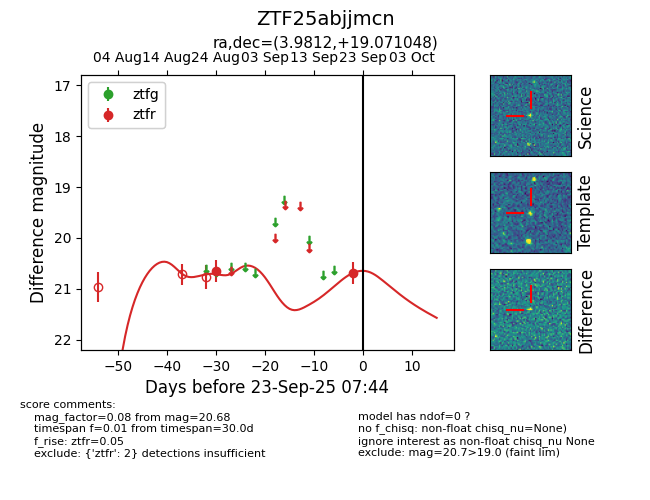
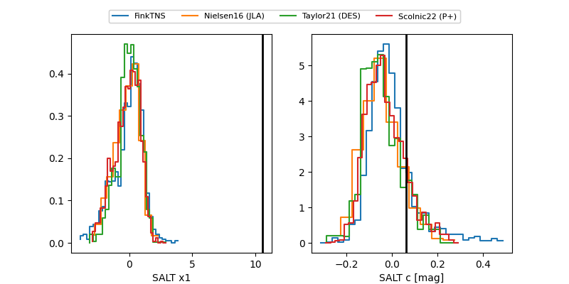

FINK: ZTF25abjjmcn
Lasair: ZTF25abjjmcn
ALeRCE: ZTF25abjjmcn
ZTF25abjjmcn (ztf,fink)
equatorial (ra, dec) = (3.9812,+19.07105)
galactic (l, b) = (111.4263,-43.00591)


last ztfr=20.68
2 ztfr detections